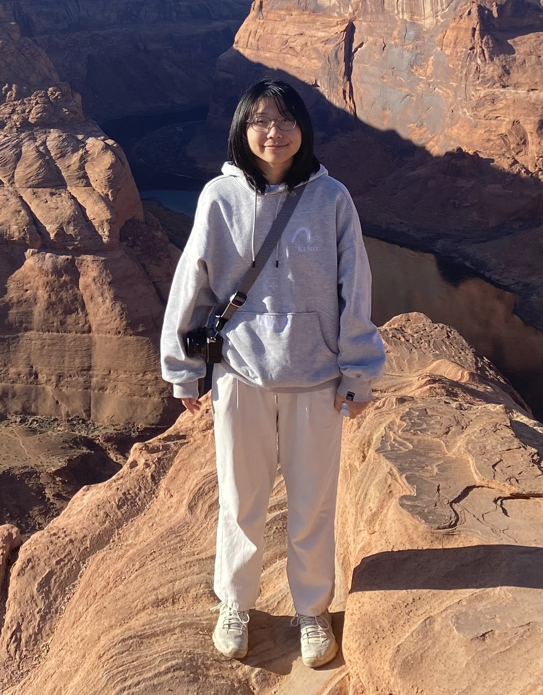
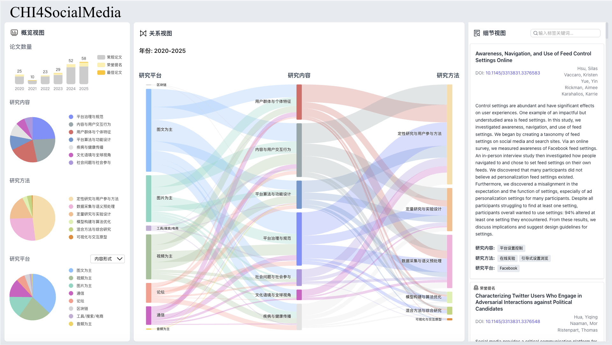
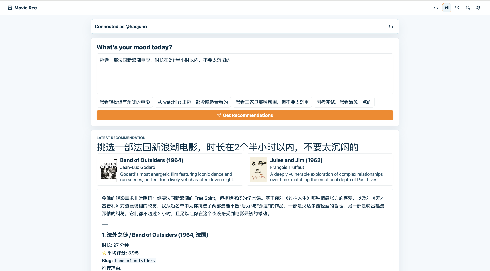
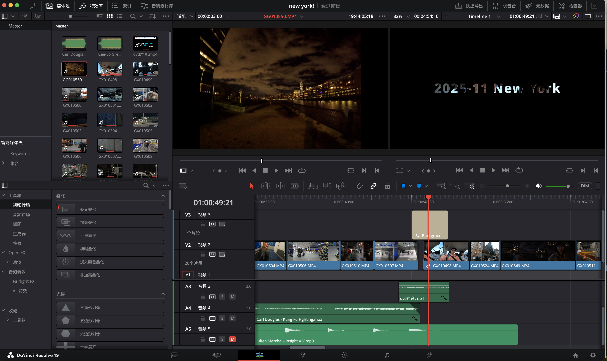
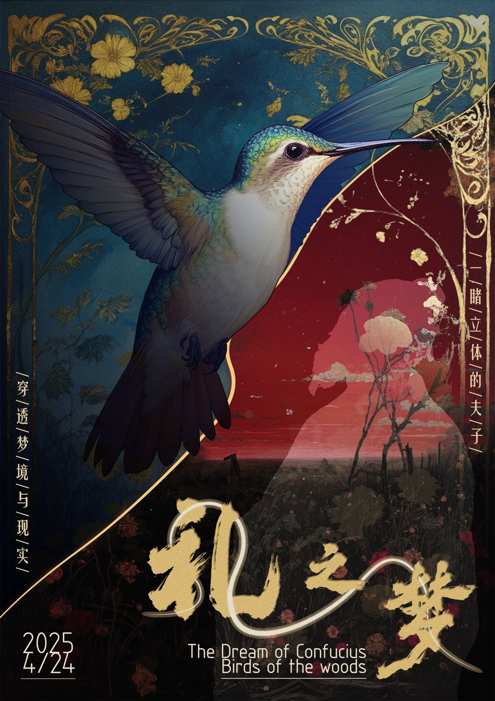

Zhejiang University · Software Engineering

Software Engineering · HCI · AI Systems
Haojun Ma
I am a junior at Zhejiang University, studying Software Engineering. In Fall 2025, I was a visiting student at UC Berkeley. My work sits at the intersection of human-computer interaction, machine learning, and systems programming, with a focus on turning research ideas into working software.
- SchoolZhejiang University
- MajorSoftware Engineering
- FocusHCI, ML, Systems
- Emailhaojun.yeah@gmail.com
About
Software engineering, research questions, working prototypes
A compact map of the academic context, research focus, and working style behind the projects below.
Visiting student experience in computer science coursework.
HCI / ML / Systems
Prototype-driven exploration from questions to working demos.
Research Experience
Projects that show how I work with research questions
Featured Project
Real-Time Sign Language Translation iOS App
Led a three-person undergraduate team to develop an iOS application for continuous sign language translation. I reviewed more than 20 research papers, coordinated with graduate collaborators and the PI, and helped build the app workflow for real-time use and vocabulary updates.
- Role: Undergraduate researcher and team lead
- Tools: Swift, Xcode, iOS UI development
- Outcome: Working app prototype for real-time translation

Project
CHI Social Media Research Dashboard
Built an interactive visualization dashboard for analyzing ACM CHI papers on social media. I designed the overview panel and implemented cross-view filtering between charts and the main Sankey diagram.
- Role: Frontend and visualization developer
- Tools: Vue 3, TypeScript, Vite
Project
Comparative Analysis of NLP Models
Reproduced and compared multiple sentiment classification models on IMDb reviews, from Logistic Regression to neural approaches, and achieved 89.3% accuracy with a tuned TF-IDF plus Logistic Regression pipeline.
- Role: Independent research project contributor
- Tools: Python, Pandas, Gensim, visualization
Personal Interests
Activities that shape how I think

Movie Recommendation Project
A personal film project that connects Letterboxd taste and viewing history with an AI-assisted recommendation workflow.

Video Editing
I use video editing to practice pacing, framing, and visual storytelling through small personal pieces.

AI Short Film: A Dream of Confucius
A collaborative AI short film project exploring ritual, memory, and visual storytelling through generative tools.
Performance clips, match photos, or training moments
Guzheng & Football
Two long-term practices that shaped my patience, rhythm, teamwork, and decision-making under pressure.
Coursework & Materials
Academic preparation and useful links
Coursework
- CS 61C Machine Structures
- CS 162 Operating Systems and System Programming
- CS 188 Introduction to Artificial Intelligence
- Advanced Data Structures and Algorithms
Contact
Let’s connect
I am open to summer research opportunities, technical collaborations, and conversations about HCI, machine learning, and systems.